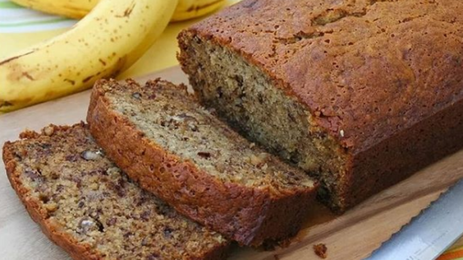

Receta de Budín de Banana
←

üçå Ingredientes
- 2 bananas maduras pisadas
- 2 huevos
- 1 taza de azúcar
- 1/2 taza de aceite
- 1 y 1/2 taza de harina leudante
- 1 cucharadita de esencia de vainilla
- 1 pizca de sal
- Opcional: nueces, chips de chocolate
üë©‚Äçüç≥ Paso a paso
- Precalentar el horno a 180°C.
- En un bowl, mezclar los huevos, el azúcar y el aceite.
- Agregar las bananas pisadas y la esencia de vainilla.
- Incorporar la harina tamizada con la sal. Mezclar bien.
- Agregar las nueces o chips si se desea.
- Verter la mezcla en un molde enmantecado y enharinado.
- Hornear por 40 a 50 minutos, o hasta que al pinchar salga seco.
- Dejar enfriar y disfrutar con un café ☕.